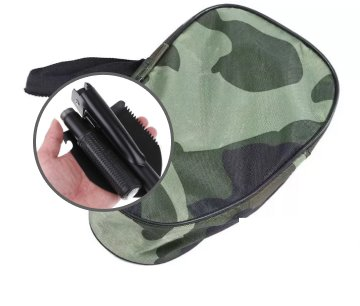
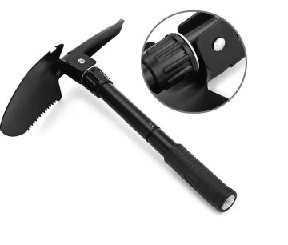
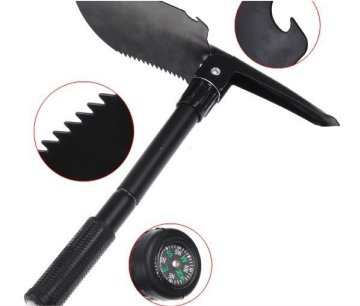
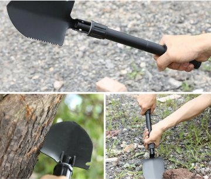

A Camping Shovel taktikai lapát mindenkinek szükséges!

Járművezetőknek és
kerékpárosoknak
kerékpárosoknak
Vadászoknak és
halászoknak
halászoknak
Turistáknak és
utazóknak
utazóknak
Nyári lakosoknak és
kertészeknek
kertészeknek
Egy Camping Shovel ásólapát, egy millió használatmód!
Egy Camping Shovel ásólapát,
egy millió használatmód!
egy kés
egy fűrész
egy kapa
egy fejsze

egy kalapács
egy csavarhúzó
A Camping Shovel taktikai lapát kialakításának az előnyei
Összehajtható és tömörséges
A lapát összecsuk egy tömörséges tokba, ami minimális helyet foglal el a táskájába vagy a hátizsákjába — bárhová magával viheti!
100%-os hatáserősség
A lapát a legtartósabb anyagból készült, titánötvözetből szénszálas kompozittal, így még egy követ is képes vágni és látni.
Egyszerű felépítés
A lapát könnyen, gyorsan és más szerszámok nélkül összecsukható és kibontható, pár perc alatt meg lehet csinálni.
Üzemmódok maximális száma
A lapát visszahúzódik egy kapaként, kalapácsként, csákányként vagy egy késként — különböző módokat használjon, hogy megpróbálja annyi funkciót, amennyit csak lehetséges.
VÁSÁROLJON MOST KEDVEZMÉNNYEL
-53%
Camping Shovel műszaki paraméterei:
- A készleten: Egy lapát + egy tok
- Anyag: titánötvözet
- A méret összecsukva: 11,5 cm x 10,2 cm
- A méret kiterített formában: 42 cm x 10,2 cm
- Fogak: vannak, megvastagodott élezett
- Fogantyú: ergonomikus, gumizott
- Bevonat: szénszálas kompozit
- Súly: 500 g
Miért még érdemes megrendelni a Camping Shovel‑t?
- Hadsereggel való együttműködés
- Innovatív anyagok
- Tökéletes technológia
- Több mint 140 000 elégedett ügyfél
Hogyan tudok rendelni a Camping Shovel‑t?
Töltse ki
a megrendelőlapot
a weboldalunkon
a megrendelőlapot
a weboldalunkon
A menedzser
meghatározza a megrendelés
részleteit
meghatározza a megrendelés
részleteit
A megrendelés kézbesítése
három napon belül
zajlik
három napon belül
zajlik
 A
Afizetés
a termékérkezéskor
- Legnagyobb hatáserősség
- Összehajtható és tömörséges
- Ergonomikus fogantyú alakja
- Vadászathoz, horgászathoz és szabadtéri tevékenységekhez